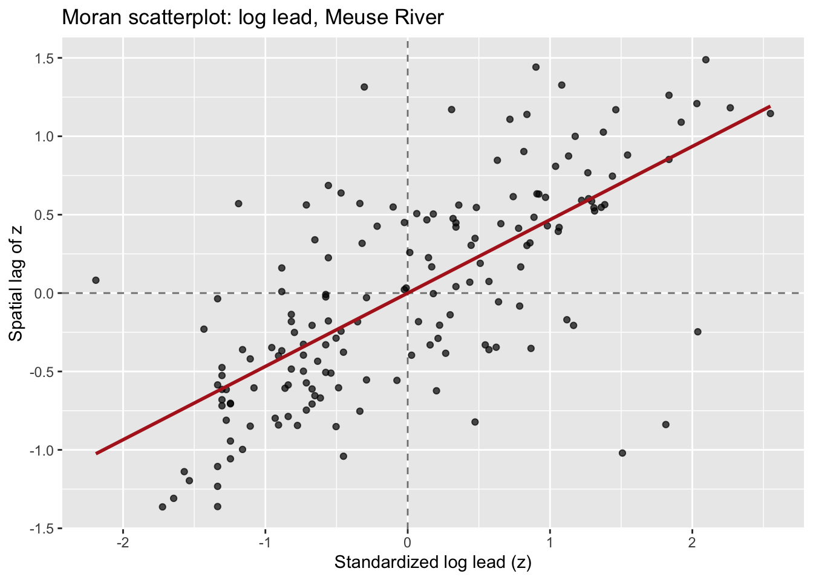
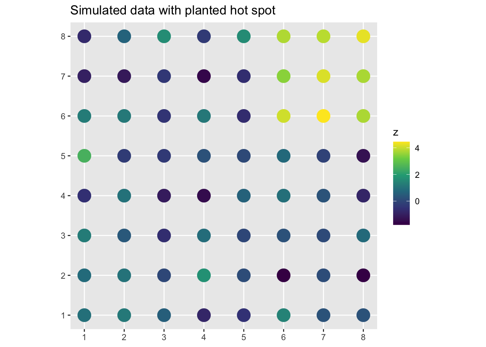
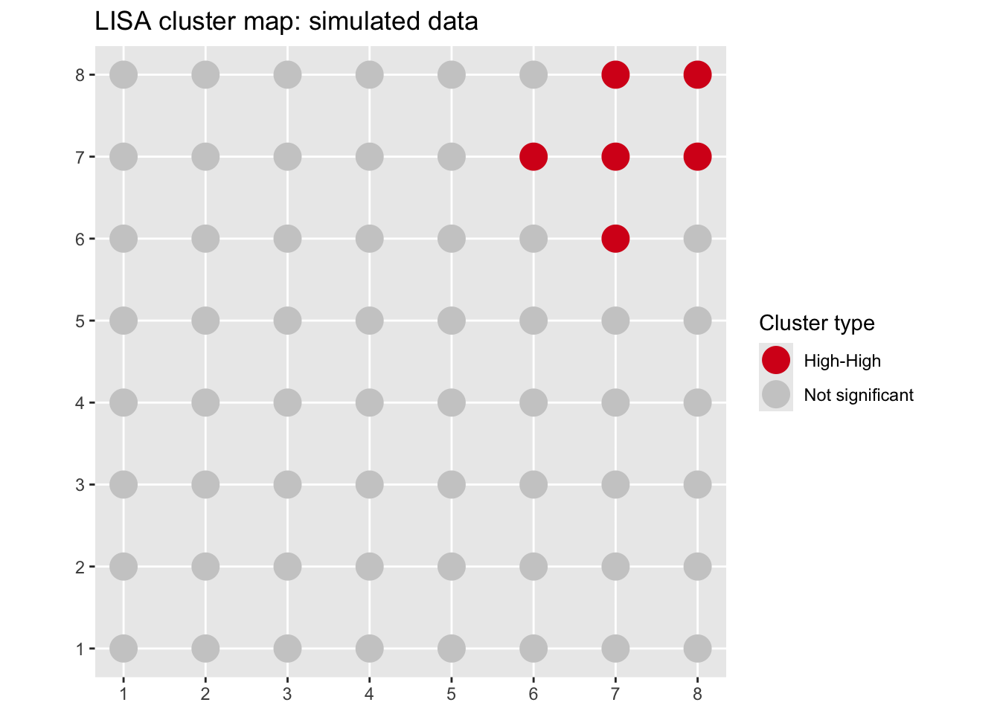
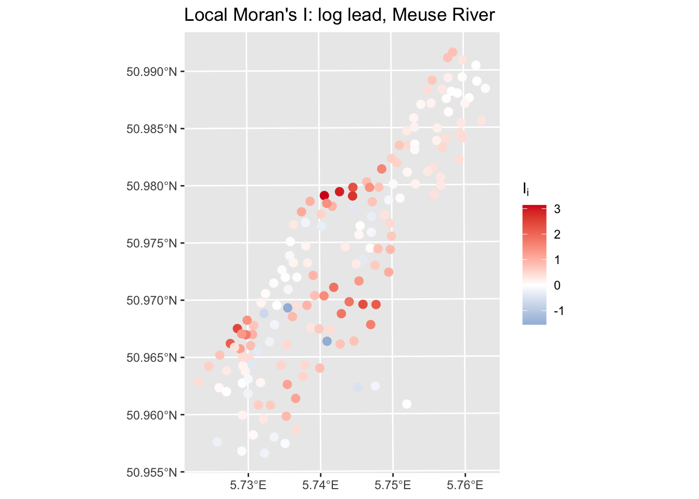

Code
library(sf)
library(tidyverse)
library(spdep)
library(tmap)
library(gstat)Space matters: Spatial pattern lets us understand process. Global Moran’s I tells you whether spatial autocorrelation exists across your study area and perhaps at what distances. Local Indicators of Spatial Association (LISA) tell you where. LISA lets us go from a single number that summarizes the entire map to a map of where the clustering and the outliers actually live.
Anselin (1995) is the original paper introducing LISA. It is not a breezy read, but sections 1 through 3 are worth your time. Pay attention to the conceptual motivation – why a global statistic is insufficient – and the four categories of local spatial association. You do not need to follow every bit of the math.
This module builds directly on the Spatial Autocorrelation chapter. Make sure you are comfortable with Moran’s I and how spatial weights matrices work before diving in.
Same cast as the autocorrelation chapter with sf(Pebesma 2026), tidyverse(Wickham 2023) tmap(Tennekes 2025), gstat(Pebesma and Graeler 2026), and spdep(Bivand 2026).
Think back to what global Moran’s I gives you. One number. For the entire study area. That number can be positive, negative, or close to zero, and it summarizes the overall tendency for similar values to cluster together or disperse.
But what if your study area has a hot spot of high values in one corner, a cold spot of low values in another, and a bunch of spatial noise in between? The global statistic averages all of that together. The hot spot and cold spot might be driving most of the signal, or the noise might be drowning it out. You can not tell from the single number which it is, or where any of it is happening.
This matters practically. Say you are mapping soil lead contamination across an old industrial site. You want to know where the worst contamination is clustered – not just whether the overall dataset is autocorrelated. Or you are mapping bird richness and want to identify the genuine biodiversity hotspots, not just confirm that richness is spatially structured in general.
Before getting into the mechanics of local I, let’s build some intuition using a tool called the Moran scatterplot. This is worth understanding carefully because it is the conceptual bridge from global to local.
We will use the Meuse River data. If you have not already loaded and prepped it, here it is:
We need to define what “neighbor” means before we can compute anything. For LISA we use k-nearest neighbors – the \(k\) locations closest to each point in space. Here we use \(k=8\), meaning each location’s neighborhood is its 8 nearest points. There is nothing magical about 8; it is a reasonable default for a dataset this size that gives each location enough neighbors to get a stable estimate without pulling in points that are too far away.
The spdep syntax for this is a three-step pipeline and yes, it is bewildering until you have seen it a few times.
knearneigh finds the 8 nearest neighbors for each point and returns a raw neighbor table. knn2nb converts that table into a neighbor list object (nb) which is spdep’s internal format for storing who is next to whom. nb2listw takes that neighbor list and turns it into a weights list object (listw) that the rest of spdep can actually use. You can think of it as: find neighbors, formalize neighbors, weight neighbors.
The style = "W" argument is important. It row-standardizes the weights, meaning each location’s weights sum to one. If a location has 8 neighbors, each one gets a weight of 1/8. The practical effect is that the spatial lag – the weighted average of neighbors’ values – is a simple average of those 8 neighbors. This makes the Moran scatterplot interpretable and is the standard choice for LISA.
The Moran scatterplot works like this. We standardize the variable (call it \(z\)) so it has mean zero and standard deviation one. Then we compute the spatial lag of \(z\) at each location: the weighted average of \(z\) at that location’s neighbors. We plot \(z\) on the x-axis and the spatial lag on the y-axis. Every point on that scatterplot is a location in your data set.
# standardize log lead
meuse_sf$z <- as.vector(scale(meuse_sf$log_lead))
# compute the spatial lag: weighted average of neighbors' z values
meuse_sf$lag_z <- lag.listw(W, meuse_sf$z)
ggplot(meuse_sf, aes(x = z, y = lag_z)) +
geom_hline(yintercept = 0, linetype = "dashed", color = "grey50") +
geom_vline(xintercept = 0, linetype = "dashed", color = "grey50") +
geom_point(alpha = 0.7) +
geom_smooth(method = "lm", formula = y ~ x - 1,
se = FALSE, color = "firebrick") +
labs(x = "Standardized log lead (z)",
y = "Spatial lag of z",
title = "Moran scatterplot: log lead, Meuse River")
Look at the four quadrants this creates:
Now here is the cool bit! The slope of the regression line through the origin is global Moran’s I. You can verify that:
z
0.4676669 Moran I statistic
0.4676669 They match. Global Moran’s I is the average tendency across all points to fall in the HH and LL quadrants rather than the HL and LH quadrants. Each individual point’s contribution to that slope is its local Moran’s I.
Let’s make this concrete. Local Moran’s I for location \(i\) is:
\[I_i = z_i \sum_j w_{ij} z_j\]
where \(z_i = (y_i - \bar{y})/s\) is the standardized value at location \(i\), and \(\sum_j w_{ij} z_j\) is the spatial lag – the weighted average of standardized values at \(i\)’s neighbors. With row-standardized weights, this simplifies nicely: \(I_i\) is just the product of \(z_i\) and its spatial lag.
If that product is large and positive, location \(i\) is either a high-value location surrounded by high-value neighbors (HH) or a low-value location surrounded by low-value neighbors (LL). Either way, it is contributing to positive spatial autocorrelation. If the product is negative, it is a spatial outlier: a high value surrounded by lows, or vice versa.
The sum of all local \(I_i\) values is proportional to global Moran’s \(I\). Local \(I\) is a decomposition of the global statistic, not a separate method that happens to share a name.
Each local \(I_i\) comes with a p-value, answering the question: could this value have arisen by chance if the data had no spatial structure? The test works by conditional randomization – holding the value at location \(i\) fixed and permuting the values at all other locations, then asking how often a more extreme \(I_i\) would result. We will use localmoran() from spdep which handles this under the hood.
One important caveat: you are testing one hypothesis per location. With 164 locations in the Meuse data, running tests at \(\alpha = 0.05\) would produce about 8 false positives even if there were no spatial structure at all. A common and practical fix is to use a stricter threshold (\(\alpha = 0.01\) or even \(0.001\)) for the local tests. You can also use p.adjust() to apply a multiple comparisons correction, but for exploratory mapping, the stricter threshold is often good enough.
Before running LISA on real data, let’s plant a known hot spot in simulated data and confirm that we can find it. This is a recurring move in this course – if a method can not detect a pattern we deliberately created, we should not trust it on data where we do not know the answer.
I will make an 8x8 grid of locations. All locations get values drawn from a standard normal distribution, except a 3x3 block in one corner which gets values drawn from a normal distribution centered at 4. That block is our planted hot spot.
n_side <- 8
grid_pts <- expand.grid(
x = 1:n_side,
y = 1:n_side
)
grid_pts$z <- rnorm(nrow(grid_pts))
# plant the hot spot: upper-right 3x3 corner
hot_idx <- grid_pts$x >= 6 & grid_pts$y >= 6
grid_pts$z[hot_idx] <- rnorm(sum(hot_idx), mean = 4, sd = 0.5)
grid_sf <- st_as_sf(grid_pts, coords = c("x", "y"))Map it:

You can see the bright cluster in the upper right. What does global Moran’s I say?
Moran I test under randomisation
data: grid_sf$z
weights: W_sim
Moran I statistic standard deviate = 6.1083, p-value = 5.035e-10
alternative hypothesis: greater
sample estimates:
Moran I statistic Expectation Variance
0.490062410 -0.015873016 0.006860379 Moran’s I is significantly positive. That’s good, but it doesn’t tell us where. Now run LISA:
Ii E.Ii Var.Ii Z.Ii Pr(z != E(Ii))
1 0.043231877 -0.0004807782 0.007316716 0.5110332 0.6093278
2 0.032914763 -0.0016309090 0.024791405 0.2194033 0.8263359
3 0.007733561 -0.0001079891 0.001644043 0.1933950 0.8466496
4 0.137964509 -0.0140366741 0.210719770 0.3311268 0.7405487
5 0.440512856 -0.0089085627 0.134431694 1.2257529 0.2202917
6 -0.331612910 -0.0033947777 0.051512759 -1.4461228 0.1481428localmoran returns a matrix with one row per location and five columns. Ii is the local Moran’s I value for that location (the number we actually care about). E.Ii is the expected value under spatial randomness and Var.Ii is the variance, both of which feed into the test. Z.Ii is the z-score, and Pr(z != E(Ii)) is the two-sided p-value asking whether that location’s Ii is distinguishable from what you’d expect by chance. For now we just need Ii and the p-value, so let’s pull those out and attach them to our sf object.
We can build a little cluster classification now to map. We need the standardized variable and its spatial lag to assign each location to a quadrant, then use the p-value to flag non-significant ones.
z_sim <- as.vector(scale(grid_sf$z))
lag_sim <- lag.listw(W_sim, z_sim)
sig <- 0.05
grid_sf$cluster <- case_when(
z_sim > 0 & lag_sim > 0 & grid_sf$pval < sig ~ "High-High",
z_sim < 0 & lag_sim < 0 & grid_sf$pval < sig ~ "Low-Low",
z_sim > 0 & lag_sim < 0 & grid_sf$pval < sig ~ "High-Low",
z_sim < 0 & lag_sim > 0 & grid_sf$pval < sig ~ "Low-High",
TRUE ~ "Not significant"
)
ggplot(grid_sf) +
geom_sf(aes(color = cluster), size = 6) +
scale_color_manual(
values = c(
"High-High" = "#d7191c",
"Low-Low" = "#2c7bb6",
"High-Low" = "#fdae61",
"Low-High" = "#abd9e9",
"Not significant" = "grey80"
)
) +
labs(title = "LISA cluster map: simulated data",
color = "Cluster type")
The HH cluster is exactly where we planted it.
Now let’s run LISA on the log lead data where we actually want to learn something.
Ii E.Ii Var.Ii Z.Ii Pr(z != E(Ii))
1 0.7858150369 -1.183660e-02 2.294174e-01 1.66532900 0.09584714
2 0.7699598570 -9.973254e-03 1.936664e-01 1.77227122 0.07634955
3 0.3240171316 -3.748398e-03 7.324623e-02 1.21107388 0.22586709
4 -0.0105962926 -3.380530e-06 6.630615e-05 -1.30088366 0.19329828
5 -0.0003489204 -6.983224e-07 1.369702e-05 -0.09408994 0.92503771
6 -0.0461552136 -3.098744e-04 6.076055e-03 -0.58814491 0.55643503Same five columns as before. The p-values here are based on the normal approximation, which is reasonable for this sample size.
Let’s attach the results to our sf object and build the cluster map. Using \(\alpha = 0.01\) here given the multiple testing issue.
meuse_sf$Ii <- lisa[, "Ii"]
meuse_sf$pval <- lisa[, "Pr(z != E(Ii))"]
sig <- 0.01
meuse_sf$cluster <- case_when(
meuse_sf$z > 0 & meuse_sf$lag_z > 0 & meuse_sf$pval < sig ~ "High-High",
meuse_sf$z < 0 & meuse_sf$lag_z < 0 & meuse_sf$pval < sig ~ "Low-Low",
meuse_sf$z > 0 & meuse_sf$lag_z < 0 & meuse_sf$pval < sig ~ "High-Low",
meuse_sf$z < 0 & meuse_sf$lag_z > 0 & meuse_sf$pval < sig ~ "Low-High",
TRUE ~ "Not significant"
)
table(meuse_sf$cluster)
High-High High-Low Low-High Low-Low Not significant
16 1 1 11 135 Now map it. An interactive map with tmap is particularly useful here because you can click on individual points to see their values.
tmap_mode("view")
tm_shape(meuse_sf) +
tm_symbols(
fill = "cluster",
fill.scale = tm_scale_categorical(
values = c(
"High-High" = "#d7191c",
"Low-Low" = "#2c7bb6",
"High-Low" = "#fdae61",
"Low-High" = "#abd9e9",
"Not significant" = "#d9d9d9"
)
),
size = 0.5,
fill_alpha = 0.8,
fill.legend = tm_legend(title = "LISA cluster")
)Compare this to the global Moran’s I you computed in the last chapter. Log lead is positively autocorrelated overall – that was the message from the global statistic. The LISA map tells you where: the HH cluster near the river is driving most of that signal. The LL locations are farther from the river where contamination is lower. That spatial pattern is not just a statistical artifact – it maps directly onto the physical process of flood deposition from the Meuse. High-lead sediment gets deposited close to the channel, and both the contamination and its spatial coherence decay with distance.
It can also be useful to map \(I_i\) directly, not just the cluster category. This gives you a continuous view of where clustering is strongest.

Locations with strongly positive \(I_i\) are in coherent clusters – either HH or LL. Locations with negative \(I_i\) are spatial outliers. Near-zero values are, statistically speaking, uninteresting.
The HL and LH categories tend to get overlooked in favor of the hot spots and cold spots. That would be a mistake. A high-value location surrounded by low-value neighbors – an HL outlier – is asking you a question about process. Why is that location different from everywhere around it? Did something happen there? Is it a sampling artifact? Is there a local source or sink that your coarser-grained understanding of the system doesn’t account for?
In the lead data, an HL outlier would be a location with high lead concentrations in an area that is otherwise clean. That is worth a field visit. It might be an old refuse pile, a spill site, or a measurement error. You wouldn’t find it by looking at the global statistics or even the raw map without this kind of formal local analysis.
The answer is that not every spatial outlier has a good story. Some are noise. But the ones that do have a story often have a good one, and LISA is what surfaces them for investigation.
Load the birdRichnessMexico.rds data from the last module.
In the last module you described the global spatial autocorrelation in bird richness using Moran’s I and variograms. Now take the next step.
Build a k-nearest-neighbor weights matrix with \(k = 8\) and row-standardize it.
Make a Moran scatterplot for nSpecies. Eyeball the four quadrants – where do most of the points fall?
Run localmoran and build a LISA cluster map. Use \(\alpha = 0.01\).
The global autocorrelation module showed that richness is highly structured in space. The LISA map should tell you where that structure is concentrated. Does the pattern of HH and LL clusters correspond to what you’d expect based on what you know about Mexican biogeography? Think about where the species-rich areas of Mexico are and what drives them.
Are there any spatial outliers – HL or LH locations – that catch your eye? Pick one and offer a plausible ecological or geographic explanation for why that location might differ from its neighbors.
As a final exercise, think about what you would have missed if you had stopped at the global Moran’s I. Write a short paragraph (3-4 sentences) comparing what the global statistic told you to what the LISA map tells you. This is the kind of thing you would put in the methods and results section of a paper.